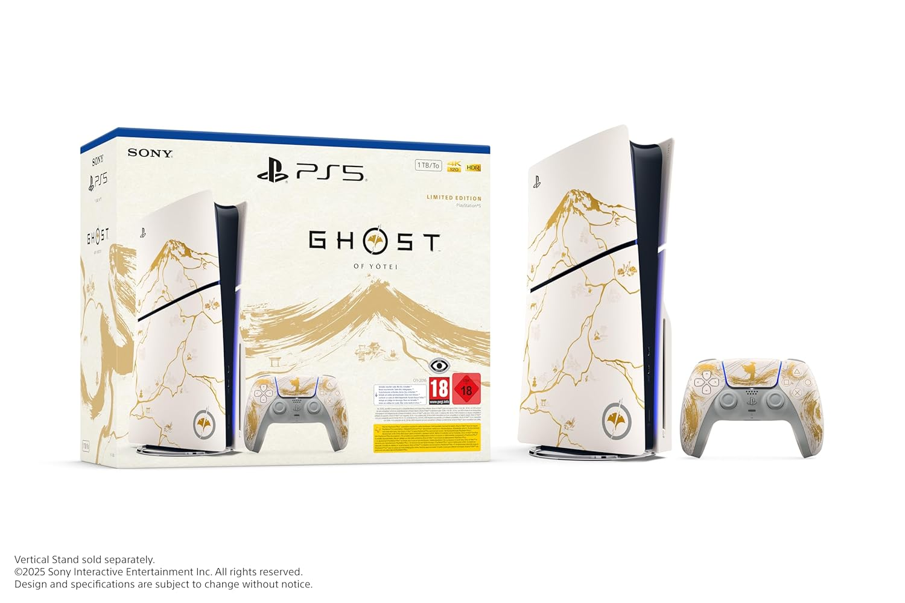

| Console Playstation 5 - Pack Ghost of Yōtei Gold Édition |  |
Console PlayStation 5 - Pack Ghost of Yōtei Gold Édition Limitée
Explorez chaque centimètre des paysages époustouflants autour du Yōtei avec la console PlayStation 5 - Ghost of Yōtei Gold Limited Edition Bundle
Découvrez l'histoire épique d'Atsu au milieu d'impressionnants paysages japonais sur du matériel inspiré du masque emblématique d'Atsu
Avec la PS5, les joueurs bénéficient d'une technologie de jeu puissante dans une console au design fin et compact
Contenu de la boîte : console PS5 en édition limitée, manette sans fil DualSense en édition limitée, bon pour la version complète de Ghost of Yōtei, SSD de 1 To, lecteur de disque, 2 pieds horizontaux, câble HDMI, câble USB, cordon d'alimentation, produits imprimés, ASTRO's Playroom préinstallé
|